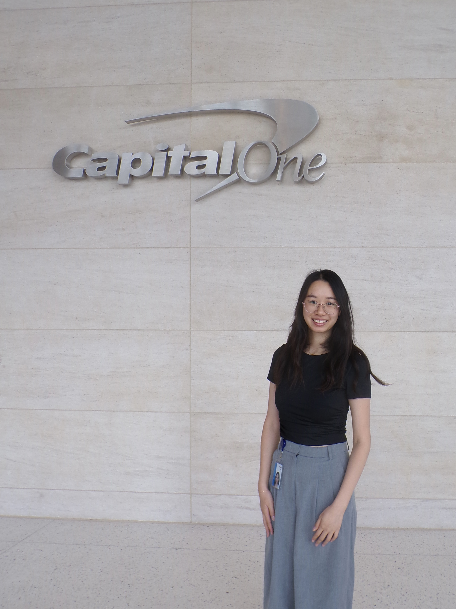

Experience
View full resume-
Data Analyst
Capital One | Now
Data analyst at Capital One, joined after graduating from UC San Diego.
-
Power Transformation Lab Research Assistant
UC San Diego | November 2025 - August 2026
Engineered Python ETL pipelines for international trade data, monitoring live ingestion and diagnosing production anomalies through logging frameworks. Used AI coding assistants to optimize API data extraction, adding dynamic batching and exponential backoff retries. Worked with senior researchers on database automation supporting low-carbon energy and climate research.
-
Data Analyst Intern
Capital One | June 2025 - August 2025
Designed and implemented SQL-based compliance controls that automated manual audit procedures on a centralized platform. Resolved issues in legacy compliance logic, removing 85% of false positives. Consolidated fragmented datasets into a centralized data mart for consistent reporting.
